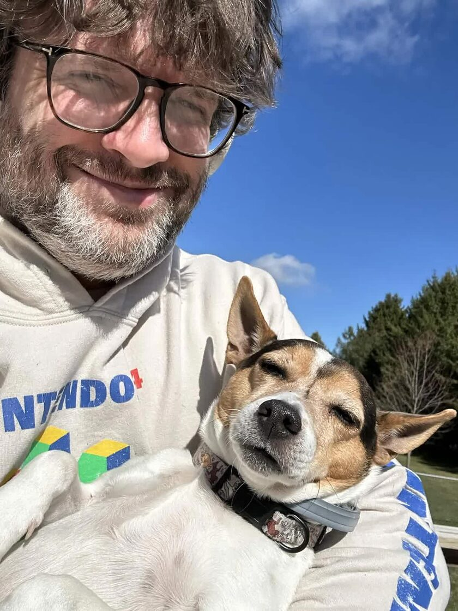

I work on systems. Linux, C, and Rust.
I am in the M.S. Computer Science program at Georgia Tech, on the computing systems track. Alongside it I am writing a Rust SPI display driver for a BeaglePlay against the Rust for Linux tree, with DOOM on a 2.4 inch panel as the target. The panel is still dark. The logic analyzer says the init sequence is right and that a mode pin is being held high, so that is the next thing to fix.
The rest of my own code is privacy tooling. monero-multisig is an M-of-N Monero multisig wallet CLI in Rust: key exchange, co-signing, submission. Tor, Whonix and key handling are a standing interest.
Before systems I spent eight years on full-stack and cloud work, including the production pages for Google I/O, and I still run Samwise Development, my consultancy. B.S. in Network and Cloud Engineering from WGU in 2026. CompTIA Security+, CompTIA Network+, ITIL 4 Foundation. Before any of that I studied computer engineering and security and risk analysis at Penn State and worked at its Applied Research Laboratory on DARPA-funded underwater acoustics for autonomous vehicles, which was classified DoD work on a Secret clearance that has since lapsed.
penn@goolz.org · github · CV · book a call
Last update: October 15, 2026.
 boot '95
boot '95